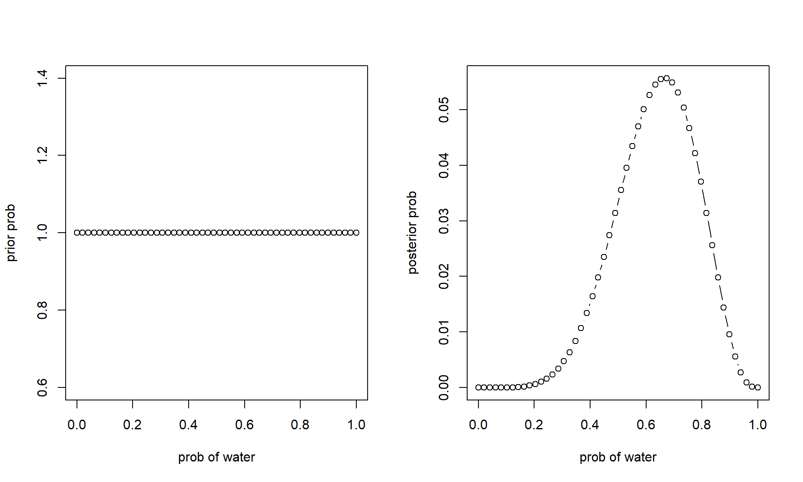
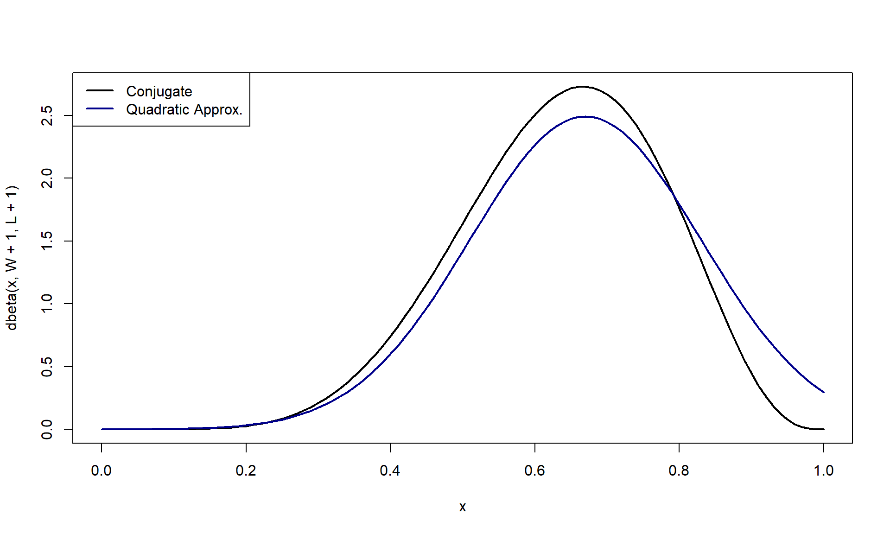
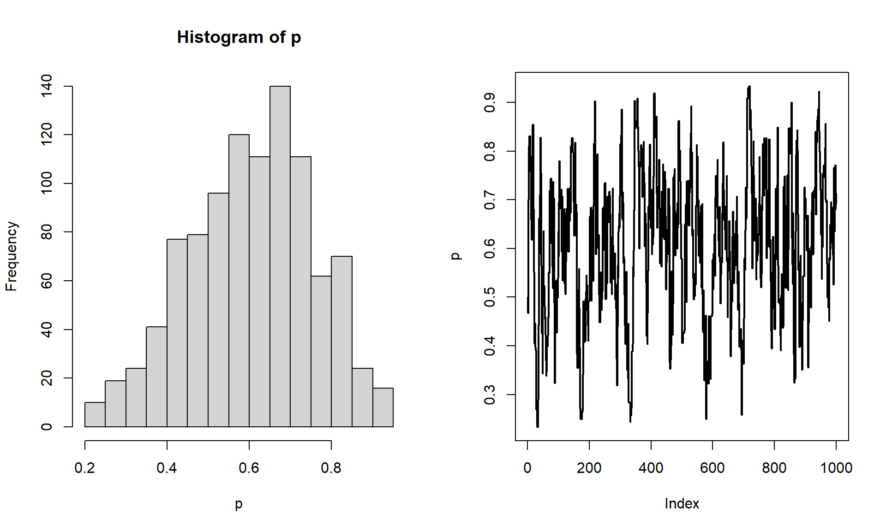
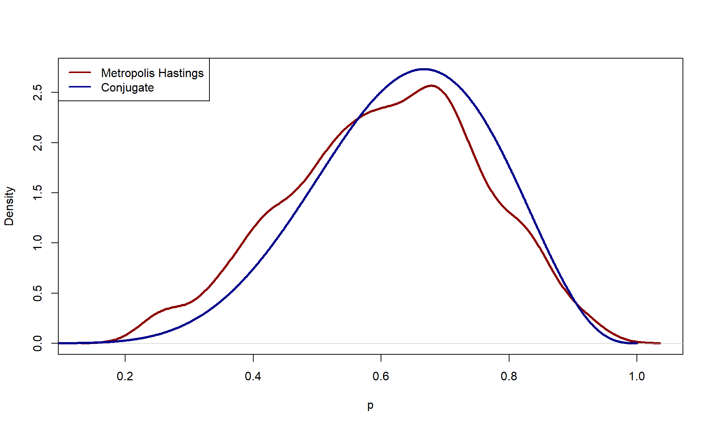
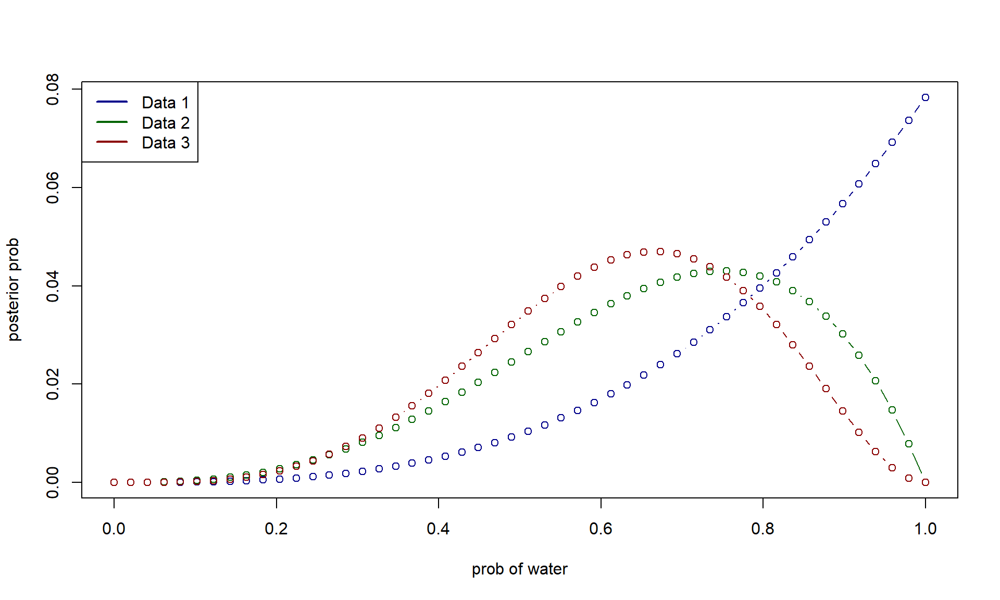
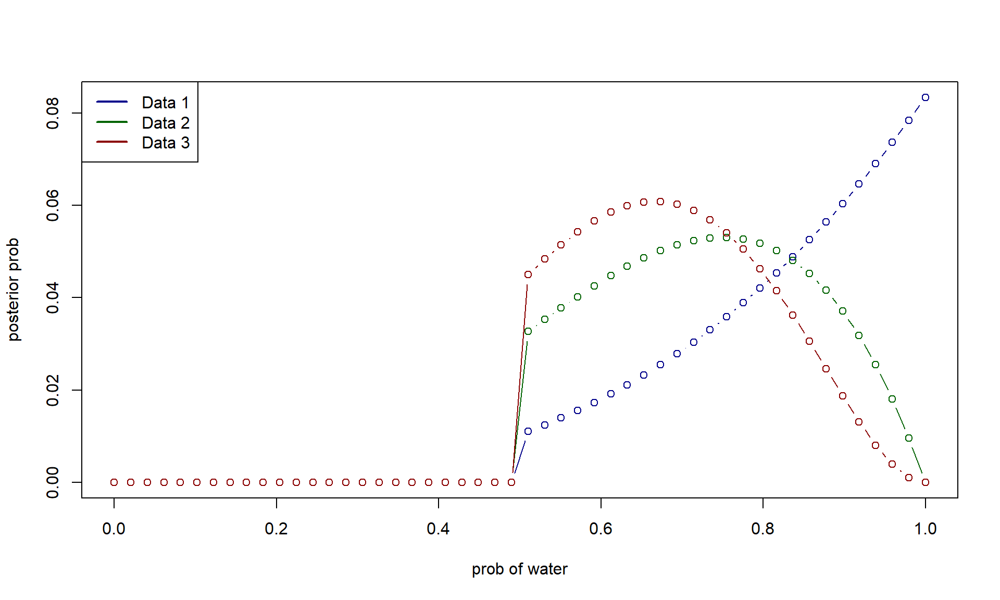

Code
library(rethinking)library(rethinking)p_grid <- seq(0,1,length.out=50) # grid for y
prior <- rep(1,length(p_grid)) #flat prior
like <- dbinom(6, size=9, prob=p_grid)
post_uns <- like*prior
post <- post_uns/sum(post_uns)
par(mfrow=c(1,2))
plot(p_grid, prior, type='b', xlab='prob of water', ylab='prior prob')
plot(p_grid, post, type='b', xlab='prob of water', ylab='posterior prob')
global_qa <- quap(
alist(
W ~ dbinom(W+L, p),
p ~ dunif(0,1)
),
data = list(W=6, L=3)
)
precis(global_qa) mean sd 5.5% 94.5%
p 0.6666664 0.1571338 0.4155361 0.9177966Assuming that the posterior is Gaussian, it is maximized at 0.67 and has a standard deviation of 0.16.
Now, let’s assume that we are using conjugacey, where the prior distribution is \(\text{Beta}(1,1)\). The conjugate posterior with a binomial likelihood would be \(\text{Beta}(W+1, L+1)\).
W <- 6
L <- 3
curve(dbeta(x, W+1, L+1), 0, 1, lwd=2)
curve(dnorm(x, 0.67, 0.16), col='darkblue', lwd=2, add=T)
legend('topleft', legend=c('Conjugate', 'Quadratic Approx.'), col=c(1, 'darkblue'), lwd=2)
Quadratic approximation can be sometimes equivalent to the estimate obtained by MLE.
log of Gaussian only needs the second derivative since it is a parabola
Simple metropolis hastings algorithm
n_samp <- 1e3
p <- rep(NA, n_samp)
p[1] <- 0.5
W <- 6; L <- 3
for (i in 2:n_samp){
p_new <- rnorm(1, p[i-1], 0.1) |> abs() # proposal
if (p_new > 1) p_new <- p_new - 1
q0 <- dbinom(W, W+L, p[i-1])
q1 <- dbinom(W, W+L, p_new)
p[i] <- ifelse(runif(1) < q1/q0, p_new, p[i-1])
}
par(mfrow=c(1,2))
hist(p)
plot(p, type='l', lwd=2)
Let’s see how well it did:
dens_p <- density(p)
x_seq <- seq(0,1,length.out=1e3)
conj <- x_seq |> dbeta(W+1, L+1)
plot(dens_p, ylim=range(conj, dens_p$y), lwd=3, col='darkred', main='', xlab='p')
lines(x_seq, conj, col='darkblue', lwd=3)
legend('topleft', legend=c('Metropolis Hastings', 'Conjugate'), col=c('darkred', 'darkblue'), lwd=2)
get_post <- function(grid, n_W, n_L){
prior <- rep(1,length(grid)) #flat prior
like <- dbinom(n_W, size=n_L+n_W, prob=grid)
post_uns <- like*prior
like*prior / sum(like*prior)
}
p_grid <- seq(0,1,length.out=50) # grid for y
plot(p_grid, get_post(p_grid, 3,0), type='b', xlab='prob of water', ylab='posterior prob', col='darkblue')
lines(p_grid, get_post(p_grid, 3,1), type='b', xlab='prob of water', ylab='posterior prob', col='darkgreen')
lines(p_grid, get_post(p_grid, 4,2), type='b', xlab='prob of water', ylab='posterior prob', col='darkred')
legend('topleft', legend=c('Data 1', 'Data 2', 'Data 3'), col=c('darkblue', 'darkgreen', 'darkred'), lwd=2)
get_post <- function(grid, n_W, n_L){
prior <- rep(1,length(grid)) #flat prior
prior[grid < 0.5] <- 0
like <- dbinom(n_W, size=n_L+n_W, prob=grid)
post_uns <- like*prior
like*prior / sum(like*prior)
}
p_grid <- seq(0,1,length.out=50) # grid for y
plot(p_grid, get_post(p_grid, 3,0), type='b', xlab='prob of water', ylab='posterior prob', col='darkblue')
lines(p_grid, get_post(p_grid, 3,1), type='b', xlab='prob of water', ylab='posterior prob', col='darkgreen')
lines(p_grid, get_post(p_grid, 4,2), type='b', xlab='prob of water', ylab='posterior prob', col='darkred')
legend('topleft', legend=c('Data 1', 'Data 2', 'Data 3'), col=c('darkblue', 'darkgreen', 'darkred'), lwd=2)